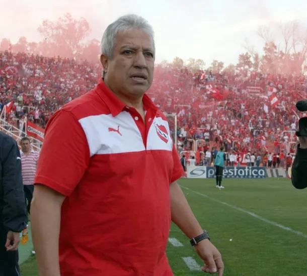
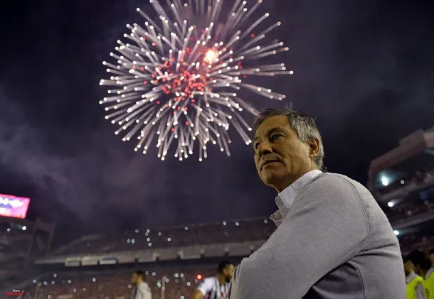
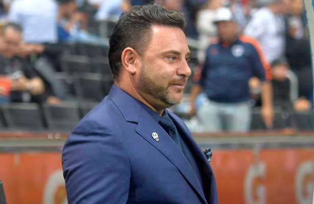
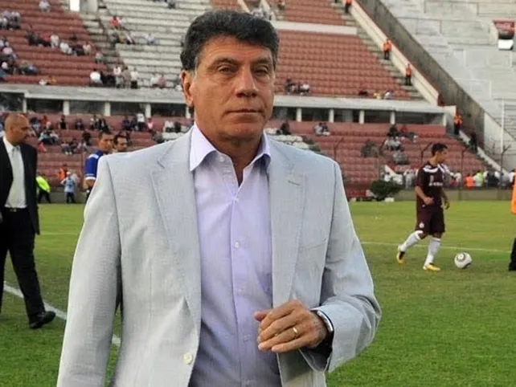
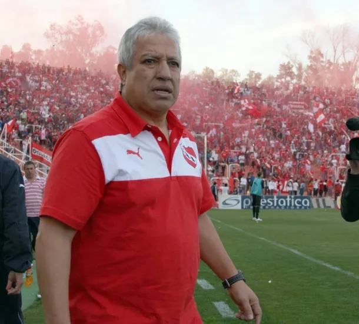
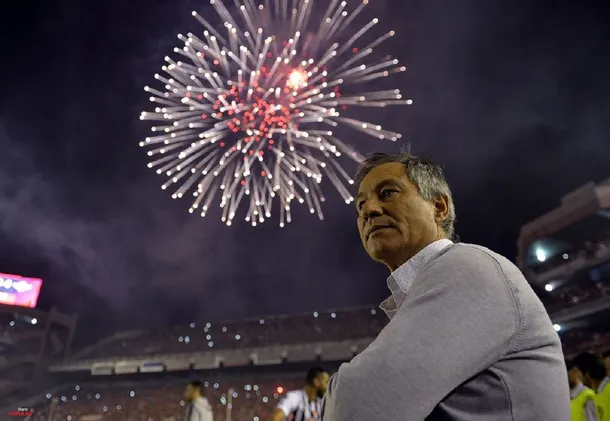
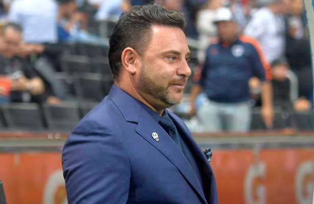
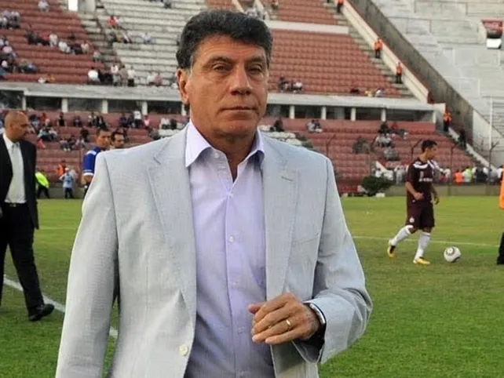

DT's campeones con el club
El Club Atlético Independiente tuvo muchos entrenadores campeones a lo largo de su historia, en este espacio
vamos a nombrar a todos aquellos que lograron coronarse en las distintas décadas.
Guillermo Ronzoni, comenzó como futbolista, surgido de la cantera del rojo donde se desempeñaba
como defensor
central. Su estadía como entrenador del elenco de Avellaneda duró aproximadamente 7 años, donde logro coronarse
campeón en 7 oportunidades, consiguiendo las Copas Río de la Plata de 1938 y de 1939; Campeonatos de Primera
División de 1938 y de 1939, Copas Dr. Carlos Ibarguren de 1938 y de 1939, y Copa Adrián C. Escobar de 1939.
Fernando Bello, fue un arquero surgido de las inferiores del club, donde desempeño toda su
carrera en
Independiente, años mas tarde fue elegido Director Técnico, donde duró 3 años (1945-1948) al mando y se consagró
campeon del Campeonato de Primera División de 1948. Roberto Sbarra, fue director técnico del
rojo durante apenas
un año, donde obtuvo el campeonato de primera división de 1960. Manuel Giúdice fue jugador de
fútbol y
posteriormente entrenador, dirigió independiente desde 1963 hasta el 1966 donde obtuvo 3 titulos, entre ellos
las 2 primeras copas Libertadores del club y el campeonato de primera división de 1963. Oswaldo
Brandao, el
único DT brasilero que tuvo independiente a lo largo de su historia, tuvo 2 etapas en el club (1961-1963) y en
1967. En esta ultima etapa es donde pudo consagrarse con un título, el torneo nacional de 1967. Pedro
Dellacha,
fue un jugador que se desempeñaba como marcador central y años más tarde se convirtió en director técnico, en el
club tuvo 2 etapas,
la primera estuvo 2 años (1970-1972) donde logró 3 títulos, ambos torneos metropolitanos de 1970 y 1971 y la
copa Libertadores de 1972 y su última etapa fue en 1975 donde tambien obtuvo la copa Libertadores de América en
el dicho año. Humberto Maschio, solamente fue director técnico del club durante un año, pero le
alcanzó para
quedar en la historia grande y lograr 2 títulos, la copa Interamericana de 1973 y la copa Libertadores de 1973.
Roberto Ferreiro, jugador e ídolo total del club, fue designado entrenador y estuvo 2 años,
tiempo suficiente
para que pueda seguir agigantando su imágen. Obtuvo 3 titulos, la copa Libertadores de 1973, fue el primer dt
campeón mundial en 1973 con el club, ganandole la final a la Juventus en Italia y también consiguio la
Interamericana en 1974. Jose Omar Pastoriza, el director técnico mas grande en la historia de
Independiente, fue
DT en 2 etapas, la primera de 1976-1979 donde logró quedarse con la copa Interamericana de 1976 y los torneos
Nacionales de 1977 y 1978, la segunda etapa fue aún mas gloriosa, estuvo al mando solamente un año, pero le
bastó para ganar 3 títulos, el torneo metropolitano de 1983 (donde salió campeon y mandó a su clásico rival al
descenso), la copa Libertadores de 1984, para ser hasta el día de hoy el máximo ganador de la competición y la
copa Intercontinental de 1984, el segundo trofeo mundial del club. Jorge Solari, fue director
técnico entre 1987
y 1990 y se coronó con un título, el campeonato de primera división de 1988/89. Miguel Ángel
Brindisi, director
técnico del club durante casi 2 años, obtuvo 3 títulos, la Supercopa Sudamericana de 1994, Recopa Sudamericana
de 1995 y Torneo Clausura de 1994. Miguel Ángel Lopez, no llegó a cumplir un año como
entrenador de
Independiente pero le alcanzó para alzarse con un trofeo, ganó la supercopa sudamericana de 1995.
Américo Rubén
Gallego, fue entrenador del club entre 2002 y 2003, conformó uno de los mejores equipos del siglo y
logró el torneo Apertura
2002. Antonio Mohamed, estuvo un año en el rojo y logró la copa sudamericana en el año 2010. El
último
entrenador en esta lista es Ariel Holan, quien estuvo casi 3 años (2016-2019), logró coronarse
con la copa
sudamericana en 2017 y la suruga bank en el 2018.
 






